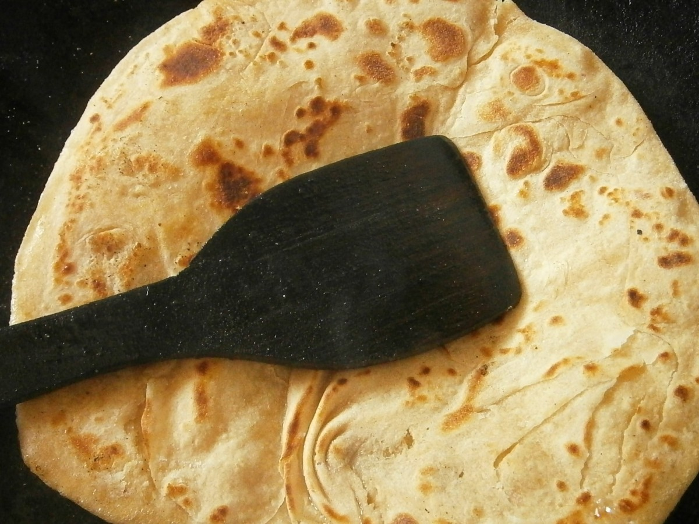

Home
Flatbread

Description
Oh my god! You forgot to buy the bread this morning! Worry not! With this quick and easy flat bread recipe, you'll be whipping up a wholesome accompaniment to any meal!
Ingredients
- 200g plain flour
- 1/4 teaspoon salt
- 100 ml warm water
Steps
- Place the flour and salt in a large bowl and trickle on the water bit by bit.
- Mix the water and flour mixture together. Kids can mix using one finger so that they don’t get a whole hand covered in dough. Doughy hands can be cleaned by rubbing a little more flour onto the hands over another bowl or the bin – resist the urge to wash doughy hands as you will block the drain!
- Add the oil and knead the dough – you are aiming for a soft dough. If it is too sticky, add a little more flour or if it is too dry, add a splash of water.
- Knead the dough for 5 minutes – kids can do this in the bowl or on a clean surface using one or two hands.
- You can cook the breads straight away or leave the dough to stand for about 30 minutes. This is a good time to make a quick filling such as a grated salad or dip. Divide the dough into four balls (or six if you have a smaller frying pan).
- On a clean surface, roll each ball of dough one at a time using a rolling pin (see the Recipe Tip for alternatives). If you pick up and move round the flatbread often you know it hasn’t stuck. (You may need to sprinkle a little flour on the surface but only use a little as too much will dry out the dough.) Don’t worry if they aren’t perfect circles!
- Heat a large frying pan over a medium heat. Take a sheet of kitchen paper and rub a little oil onto the surface of the pan. Cook each flatbread for about 2 minutes on one side – it should puff up a little. Flip the flatbread over using tongs and then cook for a couple of minutes on the other side. The flatbread should have turned lighter in colour and may have a few spots of brown.
- Keep the cooked flatbreads warm, wrapped in foil or a clean tea towel, until the others are cooked.